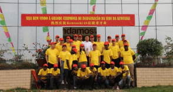
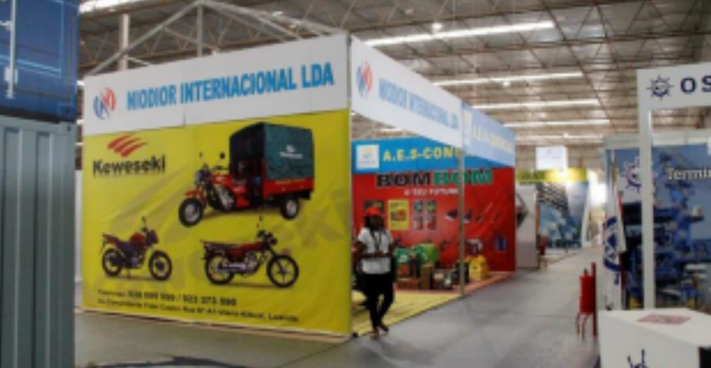
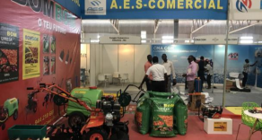
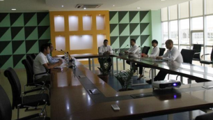
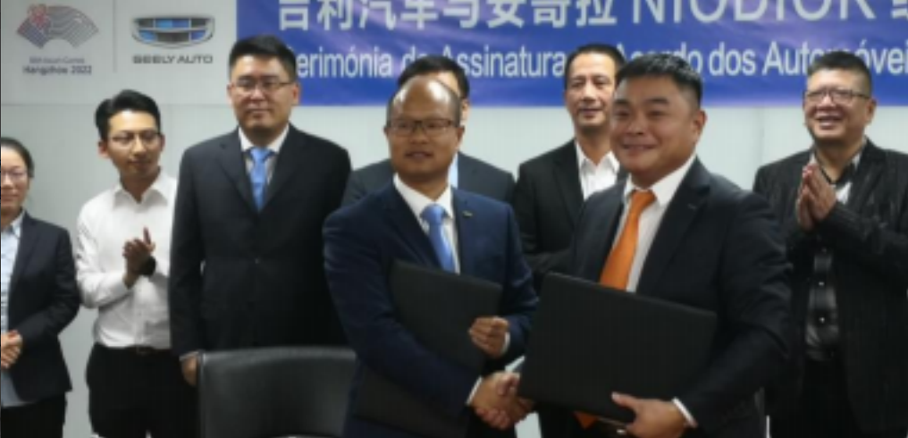
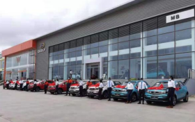

O Senhor Chen Zhihao, Presidente do Grupo NIODIOR, chegou a Angola pela primeira vez em 2003, com o foco no mercado das motos de três rodas e atuando na comercialização de veículos completos de três rodas e acessórios.

Expandindo-se gradualmente de um único tipo de motociclo de três rodas para uma variedade de motociclos, e estendendo os serviços aos processos de pré e pós-venda, os motociclos de três rodas KEWESEKI ganharam um amplo reconhecimento na região, atingindo uma quota de mercado de 75% em 2012.

Face à crise financeira, a empresa começou a transformar o seu negócio, entrando sucessivamente nos sectores da agricultura, indústria e comércio alimentar, concentrando-se em sectores relacionados com o sustento das pessoas, procurando o desenvolvimento no meio da adversidade e tornando-se líder entre as empresas privadas chinesas em Angola.

Os segmentos de negócio originais estabeleceram diversas subsidiárias em vários setores, incluindo a indústria, construção, agricultura, comércio e finanças, para apoiar o fornecimento e a cooperação à escala global.

Em fevereiro de 2021, o primeiro centro de vendas standard da Geely (concessionário Geely 4S e centro de serviços pós-venda) iniciou as suas operações, marcando a entrada oficial do grupo no setor automóvel em Angola.

Em meados de 2019, o Grupo NIODIOR adquiriu os direitos de distribuição da Geely Automobile em 14 países do Sudoeste Africano, tornando-se o único concessionário autorizado da Geely Group na China, no estrangeiro. Em Fevereiro de 2021, foi inaugurado o primeiro centro de vendas standard da Geely (concessionário Geely 4S e centro de serviços pós-venda), marcando a entrada oficial do grupo no sector automóvel de Angola.